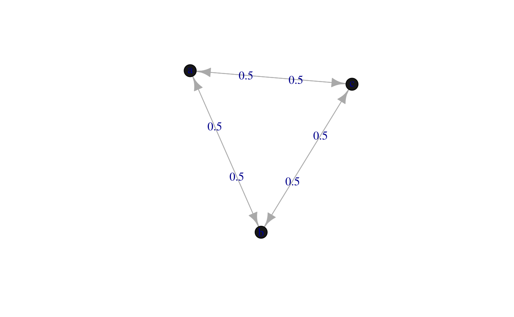

vignettes/markovchainCrashIntro.Rmd
markovchainCrashIntro.Rmd## Package: markovchain
## Version: 0.6.9.12
## Date: 2018-08-13
## BugReport: http://github.com/spedygiorgio/markovchain/issuestmA <- matrix(c(0,0.5,0.5,.5,0,.5,.5,.5,0),nrow = 3,
byrow = TRUE) #define the transition matrix
dtmcA <- new("markovchain",transitionMatrix=tmA,
states=c("a","b","c"),
name="MarkovChain A") #create the DTMC
dtmcA## MarkovChain A
## A 3 - dimensional discrete Markov Chain defined by the following states:
## a, b, c
## The transition matrix (by rows) is defined as follows:
## a b c
## a 0.0 0.5 0.5
## b 0.5 0.0 0.5
## c 0.5 0.5 0.0dtmcA2<-as(tmA, "markovchain") #using coerce from matrix
states(dtmcA2) #note default names assigned to states## [1] "s1" "s2" "s3"
## [1] 0.5## [1] 0.5## a b c
## 0.5 0.0 0.5initialState<-c(0,1,0)
steps<-4
finalState<-initialState*dtmcA^steps #using power operator
finalState## a b c
## [1,] 0.3125 0.375 0.3125## a b c
## [1,] 0.3333333 0.3333333 0.3333333E <- matrix(0, nrow = 4, ncol = 4)
E[1, 2] <- 1;E[2, 1] <- 1/3; E[2, 3] <- 2/3
E[3,2] <- 1/4; E[3, 4] <- 3/4; E[4, 3] <- 1
mcMathematica <- new("markovchain", states = c("a", "b", "c", "d"),
transitionMatrix = E,name = "Mathematica")## Mathematica Markov chain that is composed by:
## Closed classes:
## a b c d
## Recurrent classes:
## {a,b,c,d}
## Transient classes:
## NONE
## The Markov chain is irreducible
## The absorbing states are: NONEThe package permits to fit a DTMC estimating the transition matrix from a sequence of data. - createSequenceMatrix returns a function showing previous vs actual states from the pairs in a given sequence.
## 0 1-5 6+
## 0 362 126 60
## 1-5 136 90 68
## 6+ 50 79 124## $estimate
## MLE Fit
## A 3 - dimensional discrete Markov Chain defined by the following states:
## 0, 1-5, 6+
## The transition matrix (by rows) is defined as follows:
## 0 1-5 6+
## 0 0.6605839 0.2299270 0.1094891
## 1-5 0.4625850 0.3061224 0.2312925
## 6+ 0.1976285 0.3122530 0.4901186
##
##
## $standardError
## 0 1-5 6+
## 0 0.03471952 0.02048353 0.01413498
## 1-5 0.03966634 0.03226814 0.02804834
## 6+ 0.02794888 0.03513120 0.04401395
##
## $confidenceLevel
## [1] 0.9
##
## $lowerEndpointMatrix
## 0 1-5 6+
## 0 0.6160891 0.2036763 0.09137435
## 1-5 0.4117506 0.2647692 0.19534713
## 6+ 0.1618105 0.2672305 0.43371243
##
## $upperEndpointMatrix
## 0 1-5 6+
## 0 0.7050788 0.2561777 0.1276038
## 1-5 0.5134195 0.3474757 0.2672379
## 6+ 0.2334464 0.3572754 0.5465247
##
## $logLikelihood
## [1] -1040.419## MLE Fit
## A 3 - dimensional discrete Markov Chain defined by the following states:
## 0, 1-5, 6+
## The transition matrix (by rows) is defined as follows:
## 0 1-5 6+
## 0 0.6605839 0.2299270 0.1094891
## 1-5 0.4625850 0.3061224 0.2312925
## 6+ 0.1976285 0.3122530 0.4901186Brémaud, Pierre. 1999. “Discrete-Time Markov Models.” In Markov Chains, 53–93. Springer.
Csardi, Gabor, and Tamas Nepusz. 2006. “The Igraph Software Package for Complex Network Research.” InterJournal Complex Systems: 1695. http://igraph.sf.net.
Eddelbuettel, Dirk. 2013. Seamless R and C++ Integration with Rcpp. New York: Springer-Verlag.
Spedicato, Giorgio Alfredo. 2017. “Discrete Time Markov Chains with R.” The R Journal. https://journal.r-project.org/archive/2017/RJ-2017-036/index.html.
Wolfram Research, Inc. 2013. Mathematica. Ninth. Wolfram Research, Inc.